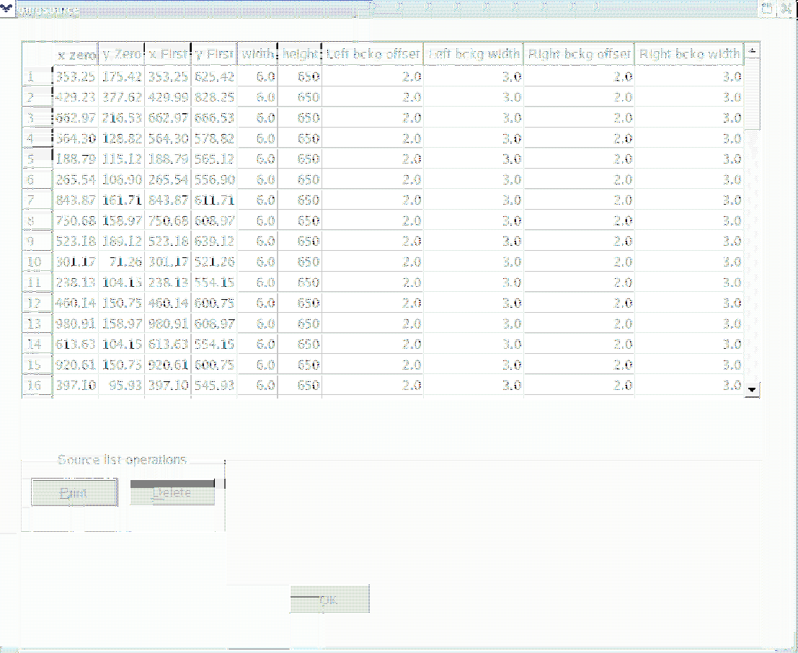

XMM-Newton Science Analysis System
omgsource (omgsource-1.10) [xmmsas_20170112_1337-16.0.0]
This window is shown in Figure 3.
Figure 3:
Spectrum-table window
|  |
To display a spectrum click the left-mouse button on its
row in the table (NOT THE NO ON THE LEFT OF THE TABLE.
XMM-Newton SOC/SSC -- 2017-01-12